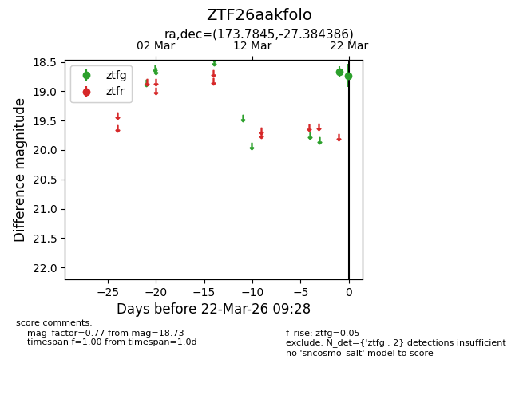
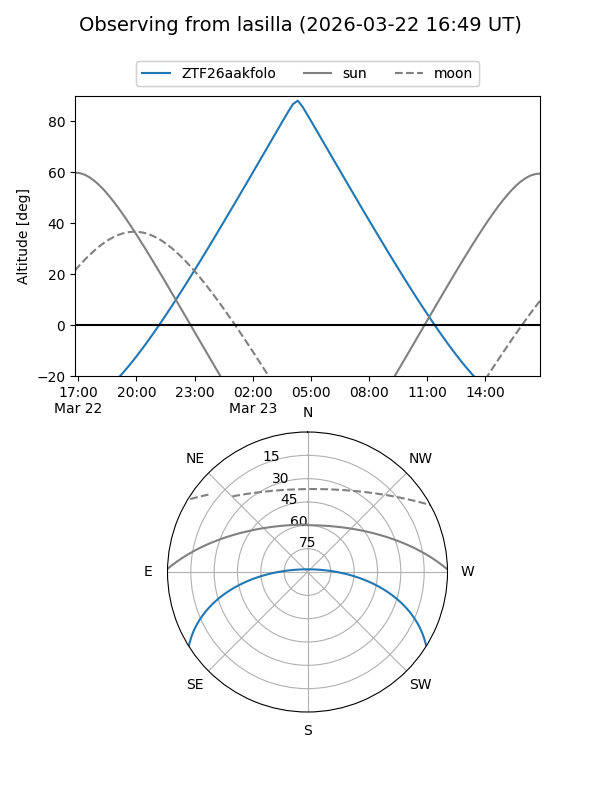
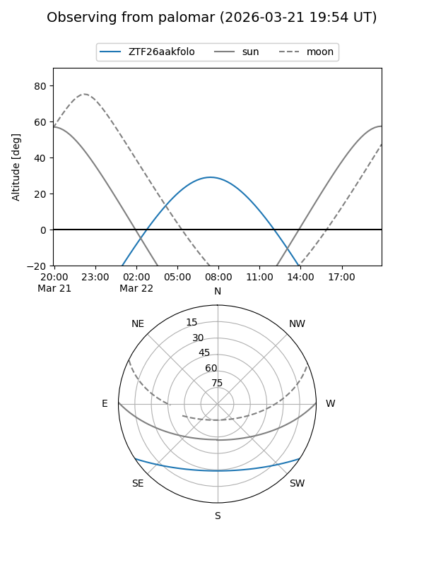

ZTF26aakfolo
Target ZTF26aakfolo at 2026-03-22 09:30
Aliases and brokers:
FINK: link
Lasair: link
ALeRCE: link
alt names
ZTF26aakfolo (ztf,fink_ztf)
Coordinates:
equatorial (ra, dec) = 173.7845,-27.38439
equatorial (HMS+DMS) = 11:35:08.27,-27:23:03.79
galactic (l, b) = (282.8097,+32.48858)
Flags:
Photometry:
last ztfg=18.73
2 ztfg detections
Lightcurve

Visibility


Additional plots